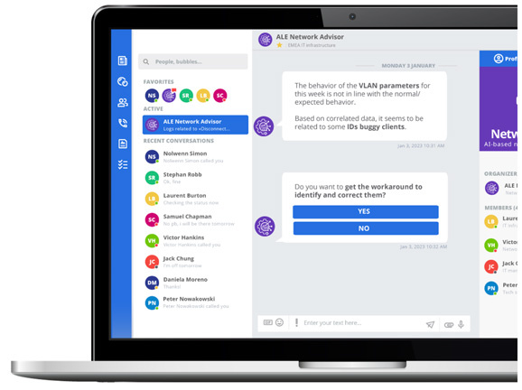

bp-network-advisor-datasheet

R（何时用）
- 客户想要 AI/ML 异常检测、自动/一键修复、网络调优建议等"智能运维"能力
- 混合 ALE（OmniSwitch/OmniAccess Stellar）+ 第三方设备的网络想纳入统一告警
- 评估 Network Advisor 与 OmniVista 平台的关系（伴随还是替代）、是否强制先买 Cirrus
- 报价时选 NETAD-* 订阅 SKU、核对虚拟机资源与用户 Rainbow 账号前提
I（核心理念）
- Network Advisor 是加在 OmniSwitch LAN 与 OmniAccess Stellar WLAN 之上的 AI/ML 运维伴随工具（非网管替代品，P1，原文p1 ），提供实时监控、风险告警与修复执行。
- 能力闭环三步（P2，原文p1 ）：
识别（Identify，偏离 AI/ML 定义的正常行为即告警）→ 缓解（Mitigate，一键或自动执行修复）→ 优化（Optimise，调优建议）。 - 架构为本地+云混合处理（hybrid，原文p1 ）；交互载体是 Rainbow CPaaS 的专用 Bot/Bubble（原文p2 ），也支持 Microsoft Teams（原文p2 ）。
A1（选型/决策要点）
- 确认被管设备构成：ALE OmniSwitch/Stellar AP 可深度纳管；第三方设备仅能发 syslog 才可接入（异常与修复规则需手工定制）（原文p1 /原文p3 ）
- 核对设备软件版本门槛（见 A2）；老版本需先升级
- 客户须自备虚拟机（ALE 不卖）；按设备数配存储（1000 台 120GB / 2000 台 210GB）（原文p3 ）
- 确认所有用户有活跃 Rainbow 账号——无 Rainbow 无法交互（原文p3 ）
- 明确不强制先买 OmniVista Cirrus（"OmniVista Cirrus is not required"，原文p3 ）
- 按设备类型单台订阅：AP / 交换机 / 第三方设备三类 SKU × 1/3/5 年（原文p4 ）
A2（规格细节速查表）
两大组件（原文p2 ）
| 组件 | 形态 | 要点 |
|---|---|---|
| Companion Service（伴随服务） | 智能手机/平板/PC | Rainbow Bot/Bubble 实时交互；接收告警；自动或用户发起修复；技术指引；IT 团队协作；Microsoft Teams 支持 |
| Management Application（管理应用） | Web | 双因子认证安全访问；设备导入/编辑/删除；异常告警激活；自定义异常列表；严重级别与多 bubble 配置；按异常配置修复类型；历史查询（时间窗/设备/异常）、CSV/Excel 导出、定时邮件 |
支持设备与最低版本（原文p3 ）
| 设备 | 最低软件版本 |
|---|---|
| OS 6xxx 与 9xxx 型号交换机 | AOS 8.7.R2 或更高 |
| Stellar AP | AWOS 4.0.3 MR-3 或更高 |
| OmniSwitch 2260 与 2360 | AOS 5.1R1 |
| 第三方设备 | 能发 syslog 即可（Syslog Server 方式，异常/修复规则手工定制） |
- 容量上限：
2000 设备（原文p3 ）
虚拟机前提（自备，ALE 不卖，原文p3 ）
- 最低规格：
四核 CPU / 8 GB RAM / 50 GB HDD（存放 syslog） - 1000 设备：
建议 120 GB 存储；2000 设备：建议 210 GB 存储 - OmniSwitch 与 Stellar AP 须已联网；不需要 OmniVista Cirrus
用户前提（原文p3 ）
- 所有用户必须有活跃 Rainbow 账号
订阅 SKU（Ebuy 下单；支持服务随许可包含，原文p4 ）
| SKU | 说明 |
|---|---|
| NETAD-AP-1Y / 3Y / 5Y | 1/3/5 年订阅——1 台 OmniAccess Stellar AP |
| NETAD-SWITCH-1Y / 3Y / 5Y | 1/3/5 年订阅——1 台 OmniSwitch |
| NETAD-TP-1Y / 3Y / 5Y | 1/3/5 年订阅——1 台第三方设备 |
- 许可激活：
收到激活码后在 Network Advisor Web 应用的 licenses management 页输入（原文p4 ） - Business Service and Support 含软件升级与 ALE Partner TAC 支持（原文p4 ）
E（适用场景案例）
- 客户已有一批第三方交换机，想上异常检测 → 走 syslog 接入 + NETAD-TP-* 订阅，异常/修复规则手工定制（C6，原文p1 /原文p3 /原文p4 ）
- 日常运维团队要在手机上实时收告警并一键修复 → Companion Service（Rainbow Bot/Bubble）（原文p2 ）
- 检测到网络安全异常时自动执行修复 → Remediation 支持自动模式（原文p1 ）
- 运维报表需求 → 历史查询 + CSV/Excel 导出 + 定时邮件（原文p3 ）
B（限制与订购坑）
- 虚拟机需自购，ALE 不卖——报价时勿遗漏（X1，原文p3 ）
- 用户必须有 Rainbow 账号，无 Rainbow 无法用（X3，原文p3 ）
- 第三方设备能力受限：
仅 syslog + 手工定制规则，无深度遥测（X4，原文p3 ） - 容量上限 2000 设备；存储按设备数预留（120GB/1000 台，210GB/2000 台）（原文p3 ）
- 订阅按"每台设备"计，NETAD-AP/SWITCH/TP 三类不可混用（原文p4 ）
- 好消息：
不强制先买 OmniVista Cirrus（X2，原文p3 ）
来源：bp-nms-brochures · alcatel-lucent-omnivista-network-advisor-datasheet-en.pdf（DID23011801EN，2024-11），p1-4
仅供内部学习使用 · 教材版权归 ALE Training Services 所有